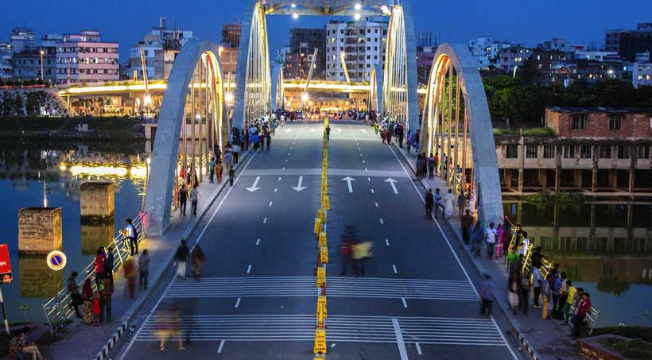

This Website created by
Md.Khaled Mhamud Mahin


The early history of Islam in Bengal is divided into two phases. The first phase is the period of maritime trade with Arabia and Persia between the 8th and 12th centuries. The second phase covers centuries of Muslim dynastic rule after the Islamic conquest of Bengal. The writings of Al-Idrisi, Ibn Hawqal, Al-Masudi, Ibn Khordadbeh and Sulaiman record the maritime links between Arabia, Persia and Bengal.[53] Muslim trade with Bengal flourished after the fall of the Sasanian Empire and the Arab takeover of Persian trade routes. Much of this trade occurred with southeastern Bengal in areas east of the Meghna River. There is speculation regarding the presence of a Muslim community in Bangladesh as early as 690 CE; this is based on the discovery of one of South Asia's oldest mosques in northern Bangladesh.[54][55][53] Bengal was possibly used as a transit route to China by the earliest Muslims. Abbasid coins have been discovered in the archaeological ruins of Paharpur and Mainamati.[56] A collection of Sasanian, Umayyad and Abbasid coins are preserved in the Bangladesh National Museum.[57]
The new government of Bangladesh transformed East Pakistan's state apparatus into an independent Bangladeshi state. The Awami League successfully reorganised the bureaucracy, framed a written constitution, and rehabilitated war victims and survivors. While returning from London, Mujib was told by an Indian diplomat that "on India's eastern flank, she wished to have a friendly power, a prosperous economy, and a secular democracy, with a parliamentary system of government".[188] In January 1972, Mujib introduced a parliamentary republic through a presidential decree.[189] On 12 January 1972 Mujib took oath and assumed office as Prime Minister of Bangladesh.[190] The emerging state structure was heavily influenced by the British Westminster model. The Constitution Drafting Committee led by Kamal Hossain established a bill of rights influenced by the Universal Declaration of Human Rights.[191]